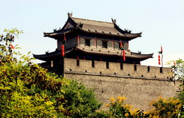
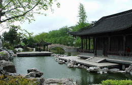

Custom Tours
USCEC also assists schools, colleges, and professional organizations in planning group China tours according to their particular needs.
Customized tours for schools: Every 10 students, the teacher goes for free. Contact us for details
We have helped organize China tours for schools and other organizations. Those customized tours can tailor the itinerary to your particular needs and interests, with visits to schools, colleges/universities, hospitals, businesses, government agencies, NGO's, museums, etc. that can help advance your educational and professional goals.
If you have a group for customized travel, please contact us via email at UsChinaEducation@yahoo.com.
